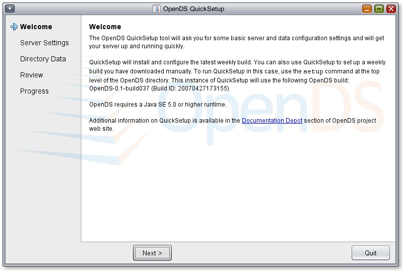
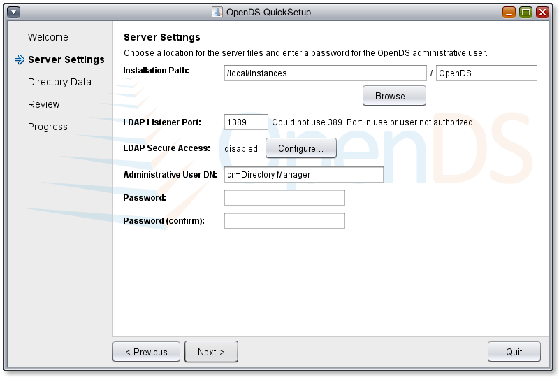
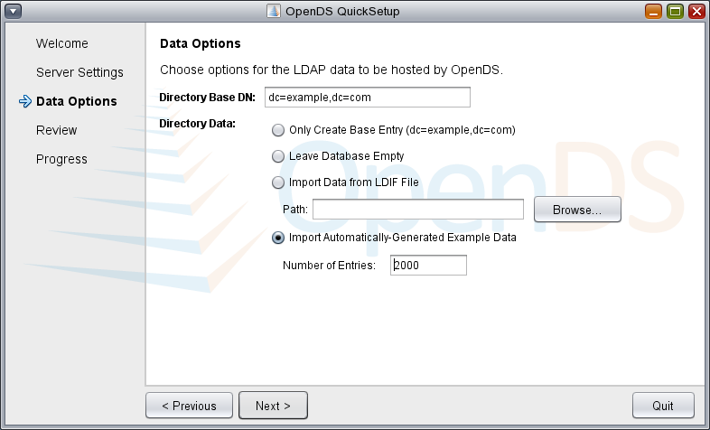
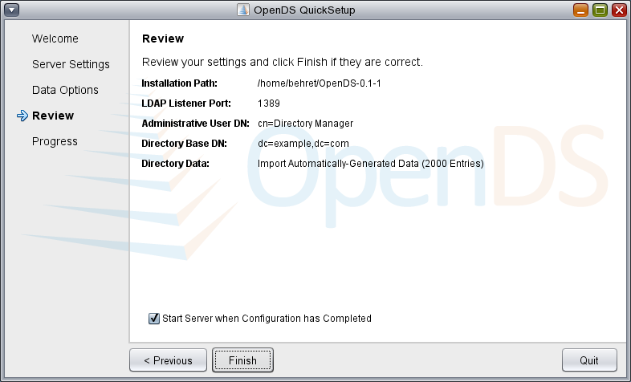
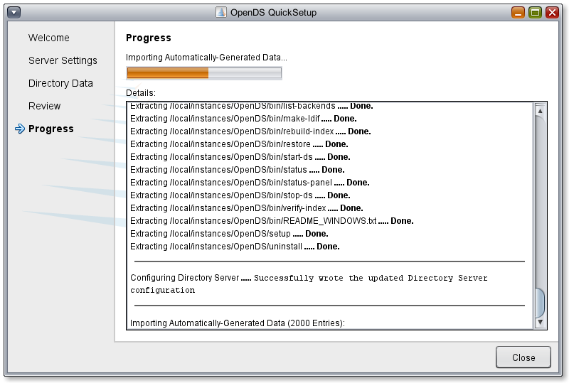
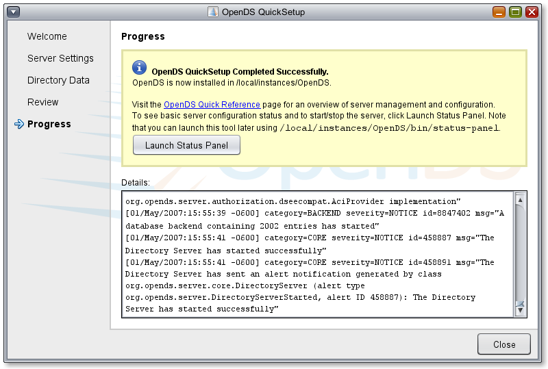
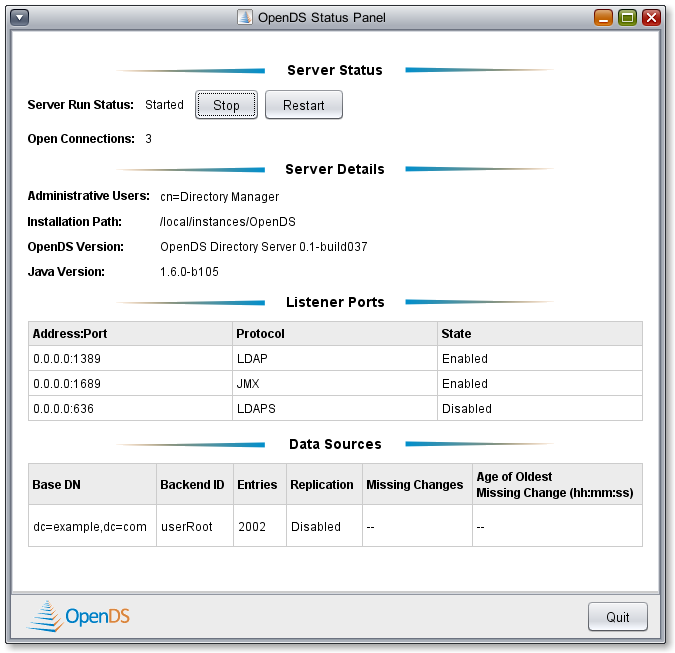

OpenDS QuickSetup Tool
OpenDS QuickSetup Tool |
QuickSetup is a Java-based graphical tool designed to let you to quickly configure an OpenDS LDAP server, load it up with data and get it running. It asks some basic questions about the server configuration and then gives you the choice of leaving your database empty, loading your server with data from your own LDIF or loading you server with sample data that QuickSetup will automatically generates for you. It will optionally start the server for you when it's done with all of that. On the final panel you will be given the option of launching the Status Panel, which is a graphical tool that provides basic server information and allows you to start, stop or restart the server.
QuickSetup can be run remotely via Java Web Start or it can be run locally from within a weekly build that you've already downloaded and unzipped. The main difference is that if you run it from Java Web Start QuickSetup will automatically download and unzip the latest build for you in addition to handling server configuration, whereas if you run it locally it will configure the build it is bundled with. Both of these options are described in more detail below.
Java Web Start is a component of the Java Runtime Environment (JRE) that allows you to download and run Java applications from the web. It comes installed with the JRE and is automatically started when you launch an application using the Java Web Start technology. The application is downloaded and cached locally on your system before it is started. Whenever you launch that application in the future, Java Web Start will check with the remote server to make sure that you have the latest version. See this FAQ item on Java Web Start on the java.com web site for more information.
You can launch the Java Web Start version of QuickSetup via the Launch QuickSetup (via Java Web Start) links on the OpenDS site, or if you have run QuickSetup in the past, you can double-click the OpenDSQuickSetup.jnlp file that was downloaded when you ran it. When you launch QuickSetup, Java Web Start will check to make sure that you have the latest version of the QuickSetup bits and will download them if necessary. It will then show you the QuickSetup Welcome Page.
QuickSetup then steps you through your server configuration and data import options, gives you a chance to review what you've specified and then gives you detailed output on its progress. See the screenshots below to see what's involved.
You can also run QuickSetup after you have downloaded and unzipped a weekly build. All you need to do is run the setup (or setup.bat) command located at the top level of your OpenDS installation directory. The configuration screens are almost identical to those shown below with the exception that you won't be asked to provide a installation directory on the Server Settings panel. If you want to run a functionally-equivalent command-line version of the QuickSetup tool, just execute the setup command with a --cli option, like so: setup --cli







If you have any questions, comments or problems with OpenDS QuickSetup, send an e-mail to the users@opends.dev.java.net mailing list.